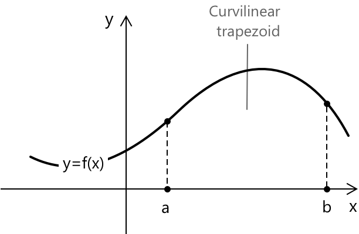
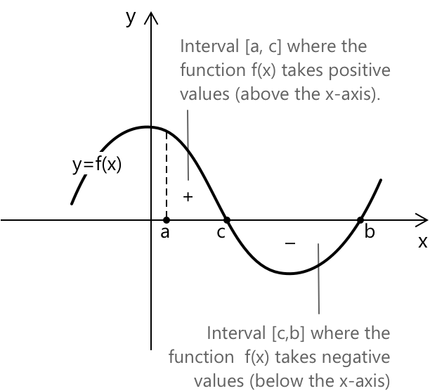

Визначені інтеграли
Площа під функцією: від кривої до інтеграла
Щоб ввести поняття визначеного інтеграла, розглянемо функцію \( f(x) \), визначену на замкненому проміжку \( [a, b] \). Визначений інтеграл функції \( f(x) \) на цьому проміжку визначається як орієнтована площа області, обмеженої графіком функції, віссю x та вертикальними прямими \( x = a \) і \( x = b \), і представляється формулою:
\[\int_{a}^{b} f(x) \, dx \]
Дано функцію \( y = f(x) \) та замкнений і обмежений проміжок \( [a, b] \), на якому функція є неперервною; криволінійна трапеція — це плоска область, обмежена графіком \( f(x) \), віссю x та вертикальними прямими \( x = a \) і \( x = b \).

Ця область, по суті, є чотирикутником із вигнутою верхньою стороною, і її площа, як показано на діаграмі, не може бути прямо визначена за допомогою класичних формул для плоских фігур з геометрії. Труднощі полягають у нерівномірності кривої, що вимагає більш складного підходу для точного вимірювання площі.
Наближення площі за допомогою прямокутних сум
В принципі, площу криволінійної трапеції можна наблизити, розглянувши послідовність \( n \) підпроміжків, отриманих шляхом поділу відрізка \( [a, b] \) на рівні частини. Ширина кожного підпроміжку обчислюється за формулою:
\[\Delta x = \frac{b - a}{n} \]
Цей підхід розбиває складну область на простіші фігури, площі яких можна легше обчислити, а потім підсумувати, щоб наблизити загальну площу криволінійної трапеції.

Нехай \( m_i \) — мінімальне значення, яке набуває функція \( f(x) \) на i-му підпроміжку. Тоді площа криволінійної трапеції наближається знизу величиною \( s_n^{-} \), яка представляє собою суму площ усіх цих \( n \) прямокутників:
\[ s_n^{-} = m_1 \Delta x_1 + m_2 \Delta x_2 + \ldots + m_n \Delta x_n = \sum_{i=1}^{n} m_i \Delta x_i \]
Це наближення є нижньою сумою, оскільки воно використовує мінімальне значення функції на кожному підпроміжку. Аналогічно, ми можемо обчислити верхню суму:
\[ s_n^{+} = M_1 \Delta x_1 + M_2 \Delta x_2 + \ldots + M_n \Delta x_n = \sum_{i=1}^{n} M_i \Delta x_i \]
Де \( M_i \) — максимальне значення функції \( f(x) \) на i-му підпроміжку.

Отже, ці дві суми представляють нижнє та верхнє наближення площі криволінійної трапеції, яку ми хочемо визначити. У міру того як ширини \( \Delta x \) прямокутників зменшуються, ці суми забезпечують точніше наближення площі криволінійної трапеції. Коли ширини \( \Delta x \) наближаються до нуля, верхня та нижня суми збігаються до одного й того самого значення \( I \). Ця спільна границя двох сум і є значенням визначеного інтеграла. Такий підхід, заснований на збіжності нижніх і верхніх сум, відомий як визначення Рімана для інтеграла.
Функція \( f(x) \), яка є обмеженою на замкненому проміжку \( [a, b] \), називається інтегруючою, якщо:
\[\lim_{\Delta x \to 0} s_n^{-} = \lim_{\Delta x \to 0} s_n^{+} = I \]
Значення \( I \) називається визначеним інтегралом \( f(x) \) на \( [a, b] \) і визначається як:
\[I = \int_{a}^{b} f(x) \, dx \]
Кінці \( [a, b]\) проміжку називаються межами інтегрування, де \( a \) — нижня межа, а \( b \) — верхня межа. Функція \( f(x) \) називається підінтегральною функцією. З геометричної точки зору величини \( dx \) та \( f(x) \) представляють відповідно основу та висоту інфінітезимальних прямокутників, що використовуються для наближення площі під кривою.
Обчислення визначених інтегралів
Як практично обчислити значення визначеного інтеграла? Якщо \( f(x) \) є неперервною функцією на \( [a, b] \) і \( F(x) \) є будь-якою первообразною \( f(x) \), то виконується наступне:
\[\int_{a}^{b} f(x) \, dx = F(b) - F(a)\]
- \( F(x) \) така, що \( F’(x) = f(x) \) для всіх \( x \in [a, b] \).
- \( F(b) \) та \( F(a) \) представляють значення первообразної, обчислені у верхній та нижній границах інтегрування відповідно.
Ця формула є висновком Другої фундаментальної теореми числення, яка доводить, що для будь-якої неперервної функції \( f \) на \( [a, b] \) визначений інтеграл можна обчислити, знайшовши значення первообразної у двох кінцевих точках проміжку. Друга теорема ґрунтується на Першій фундаментальній теоремі числення, яка показує, що функція, визначена як накопичення площі від фіксованої точки:
\[ F(x) = \int_a^x f(t)\,dt \]
є диференційовною, і її похідна — це саме початкова функція: \( F’(x) = f(x) \). Саме це робить диференціювання та інтегрування оберненими операціями в точному сенсі. Обидва результати разом із їхніми доведеннями та прикладами розглянуті на окремій сторінці про Фундаментальну теорему числення.
Властивості
Коли дві границі інтегрування збігаються, інтеграл дорівнює нулю:
\[\int_{a}^{a} f(x) \, dx = 0\]
Це випливає безпосередньо з означення: якщо проміжок не має ширини, то немає площі, яку можна було б накопичити.
Зміна granic інтегрування на протилежні змінює знак інтеграла:
\[\int_{a}^{b} f(x) \, dx = -\int_{b}^{a} f(x) \, dx\]
Це відображає орієнтовану природу визначеного інтеграла. Коли ви інтегруєте від \( b \) до \( a \) замість того, щоб інтегрувати від \( a \) до \( b \), ви проходите по проміжку у протилежному напрямку, і знак накопиченої площі відповідно змінюється.
Якщо функція \( f(x) \) є сталою на проміжку \( [a, b] \), тобто \( f(x) = k \), тоді визначений інтеграл можна обчислити наступним чином:
\[\int_{a}^{b} k \, dx = k(b – a)\]
Цей результат випливає з того, що площа під сталою функцією — це просто прямокутник з висотою \( k \) та основою \( b – a \).
Якщо \( f(x) \) є неперервною на \( [a, b] \) і \( k \) є сталою, то сталий множник можна винести за знак інтеграла:
\[\int_{a}^{b} k \cdot f(x) \, dx = k \int_{a}^{b} f(x) \, dx\]
Ця властивість у поєднанні з адитивністю інтеграла по сумах робить визначений інтеграл лінійним оператором.
Якщо \( f(x) \) та \( g(x) \) є неперервними функціями на \( [a, b] \), то їхня сума \( f(x) + g(x) \) також є неперервною на \( [a, b] \). Інтеграл від суми цих функцій визначається так:
\[\int_{a}^{b} \left( f(x) + g(x) \right) \, dx = \int_{a}^{b} f(x) \, dx + \int_{a}^{b} g(x) \, dx\]
Якщо \( f(x) \) є неперервною на проміжку і \( a \), \( b \) та \( c \) є точками в цьому проміжку, то виконується наступна властивість:
\[ \int_{a}^{c} f(x) \, dx = \int_{a}^{b} f(x) \, dx + \int_{b}^{c} f(x) \, dx \]
Тепер розглянемо порівняння інтегралів двох функцій \( f(x) \) та \( g(x) \), які є неперервними на проміжку \( [a, b] \) і такими, що \( f(x) \leq g(x) \) для кожної точки в проміжку. Якщо ці умови виконуються, то:
\[\int_{a}^{b} f(x) \, dx \leq \int_{a}^{b} g(x) \, dx\]
Ця властивість стверджує, що якщо одна функція завжди менша або дорівнює іншій на проміжку \( [a, b] \), то інтеграл від першої функції менший або дорівнює інтегралу від другої функції.
Це відомо як властивість порівняння інтегралів і є важливою для встановлення нерівностей, що містять інтеграли. У геометричному сенсі це означає, що площа під кривою функції \( f(x) \) менша або дорівнює площі під кривою функції \( g(x) \).
Теорема про середнє значення для інтегралів
Якщо \( f(x) \) є неперервною на \( [a, b] \), то існує принаймні одна точка \( c \in (a, b) \), така що:
\[ \int_{a}^{b} f(x) \, dx = f(c)(b – a) \]
Значення \( f(c) \) є середнім значенням функції на проміжку. Геометрично це означає, що завжди існує прямокутник з основою \( b – a \) і висотою \( f(c) \), площа якого точно дорівнює площі під кривою. Теорема гарантує існування такої точки, але не вказує, як її знайти — це залежить від конкретної функції.
Середнє значення \( f \) на \( [a, b] \) можна записати явно як:
\[ f(c) = \frac{1}{b - a} \int_{a}^{b} f(x) \, dx \]
Теорема про середнє значення для інтегралів є інтегральним аналогом теореми Лагранжа про середнє значення. У той час як остання гарантує точку, де миттєва швидкість зміни дорівнює середній швидкості зміни, ця теорема гарантує точку, де значення функції дорівнює середньому значенню на проміжку. Обидва результати говорять про схоже: неперервні функції не можуть «уникнути» своїх середніх значень.
Приклад 1
Обчислимо визначений інтеграл наступної функції:
\[\int_{0}^{3} (3x – x^2) \, dx\]
Перш ніж переходити до обчислень, корисно заглибитися в метод знаходження первообразних функцій та їхні властивості.
Застосовуючи властивість лінійності, інтеграл можна розбити на два окремі інтеграли:
\[\int_{0}^{3} 3x \, dx - \int_{0}^{3} x^2 \, dx\]
Виносячи сталий множник за знак першого інтеграла:
\[3\int_{0}^{3} x \, dx - \int_{0}^{3} x^2 \, dx\]
Обчислюючи первообразну кожного доданка, отримаємо:
\[F(x) = \frac{3x^2}{2} – \frac{x^3}{3}\]
Застосовуючи Другу фундаментальну теорему числення, \( F(b) - F(a) \), де \( a = 0 \) та \( b = 3 \):
\[ \begin{aligned} F(3) – F(0) &= \left( \frac{3 \cdot 9}{2} - \frac{27}{3} \right) - \left( \frac{3 \cdot 0}{2} – \frac{0}{3} \right) \\[6pt] &= \frac{27}{2} - 9 - 0 \\[6pt] &= \frac{27 – 18}{2} \\[6pt] &= \frac{9}{2} \end{aligned} \]
Отже, площа плоскої фігури, обмеженої параболічною дугою та віссю \( x \) на проміжку \( [0, 3] \), дорівнює:
\[ \frac{9}{2} \]
Це лише простий приклад, який загалом демонструє процедуру обчислення визначених інтегралів. Дуже часто інтеграли не так просто обчислити, і необхідно вдатися до інших методів розв'язання, таких як заміна змінної та інтегрування частинами.
Приклад 2
Обчислимо визначений інтеграл наступної функції:
\[\int_{0}^{\pi} (x + \sin(x)) \, dx\]
Цей приклад поєднує поліном з тригонометричною функцією. Перед початком може бути корисно повторити інтеграли тригонометричних функцій.
Застосовуючи властивість лінійності, інтеграл можна розбити на два окремі інтеграли:
\[\int_{0}^{\pi} x \, dx + \int_{0}^{\pi} \sin(x) \, dx\]
Обчислюючи первообразну кожного доданка:
\[F(x) = \frac{x^2}{2} - \cos(x)\]
Застосовуючи Другу фундаментальну теорему числення, \( F(b) – F(a) \), де \( a = 0 \) та \( b = \pi \):
\[ \begin{aligned} F(\pi) - F(0) &= \left( \frac{\pi^2}{2} – \cos(\pi) \right) - \left( \frac{0^2}{2} - \cos(0) \right) \\ &= \left( \frac{\pi^2}{2} + 1 \right) - \left( 0 – 1 \right) \\ &= \frac{\pi^2}{2} + 1 + 1 \\ &= \frac{\pi^2}{2} + 2 \end{aligned} \]
Отже, площа плоскої фігури, обмеженої кривою \( x + \sin(x) \) та віссю \( x \) на проміжку \( [0, \pi] \), дорівнює:
\[ \frac{\pi^2}{2} + 2 \]
Робота з визначеними інтегралами з додатними та від'ємними площами
Ми побачили, що визначений інтеграл представляє площу області, обмеженої графіком \( f(x) \), віссю x та вертикальними прямими \( x = a \) і \( x = b \).
\[\int_{a}^{b} f(x) \, dx \]
Це справедливо, коли \( f(x) \) завжди більше нуля на проміжку, де ми обчислюємо площу криволінійного трапецієподібного елемента. Однак, коли \( f(x) \) змінює знак на проміжку \( [a, b] \), ми повинні діяти інакше. Таку поведінку можна спостерігати на наступному зображенні:

У цьому випадку проміжок \( [a, b] \) необхідно розділити на підпроміжки, на яких функція зберігає той самий знак. Наприклад, \( [a, c] \), де функція \( f(x) \) є додатною, та \( [c, b] \), де функція є від'ємною.
Визначені інтеграли потім обчислюються окремо на кожному підпроміжку, а результати комбінуються алгебраїчно з урахуванням їхніх знаків. Цей процес гарантує, що площі нижче осі x рахуються як від'ємні, тоді як площі вище осі x рахуються як додатні. У цьому випадку маємо:
\[\int_{a}^{b} f(x) \, dx = \int_{a}^{c} f(x) \, dx + \int_{c}^{b} f(x) \, dx \]
У випадку парної функції (симетричної відносно осі y), площа між \( [-a, 0] \) дорівнює площі між \( [0, a] \). Отже, визначений інтеграл дорівнює:
\[ \int_{-a}^{a} f(x) \, dx = 2 \int_{0}^{a} f(x) \, dx \]

У випадку непарної функції (симетричної відносно початку координат), площа між \( [-a, 0] \) дорівнює за величиною, але протилежна за знаком площі між \( [0, a] \). Отже, визначений інтеграл дорівнює:
\[ \int_{-a}^{a} f(x) \, dx = 0 \]

У випадку парної функції площа, обмежена графіком \( f(x) \) та віссю \( x \) на проміжку \( [-a, a] \), становить:
\[ S = 2\int_{0}^{a} f(x) \, dx \]
У випадку непарної функції, де внески вище та нижче осі \( x \) взаємознищуються у визначеному інтегралі, геометрична площа становить:
\[ S = 2\int_{0}^{a} |f(x)| \, dx \]
Невластиві інтеграли
Все розглянуте на цій сторінці передбачає, що проміжок \( [a, b] \) є скінченним і що \( f(x) \) залишається обмеженою на всьому проміжку. На практиці ці умови не завжди виконуються. Часто трапляються інтеграли на проміжках, що тягнуться до нескінченності, або функції, які розбігаються в деякій точці всередині області визначення.
Стандартний інтеграл Рімана не може обробляти такі випадки безпосередньо. Виходом є заміна проблемної межі границею та питання про те, чи збігається ця границя до скінченного значення. Наприклад, інтеграл на необмеженому проміжку визначається як:
\[ \int_{a}^{+\infty} f(x) \, dx = \lim_{t \to +\infty} \int_{a}^{t} f(x) \, dx \]
Коли границя існує і є скінченною, інтеграл збігається. Коли ні — він розбігається. Інтеграли такого типу детально вивчаються на спеціальній сторінці про невластиві інтеграли.
Визначений інтеграл, розглянутий на цій сторінці, вимірює орієнтовану площу та надає точний спосіб обчислення накопичених величин. Одним із найпряміших застосувань є знаходження площ областей, обмежених кривими, — задача, яка повністю зводиться до побудови та обчислення визначених інтегралів такого типу, як ті, що вивчалися тут. Це детально розглянуто на спеціальній сторінці про знаходження площ шляхом інтегрування.
Вибрана література
-
Гарвардський університет, О. Кнілл. Щільність та визначений інтеграл
-
MIT, Г. Странг. Інтеграли
-
Університет Каліфорнії в Дейвісі, Дж. Хантер. Властивості та застосування інтеграла
-
MIT, Д. Джерісон. Доведення першої фундаментальної теореми числення
-
Університет Каліфорнії в Берклі, Т. Сканлон. Наближення визначених інтегралів
-
Університет Каліфорнії в Дейвісі, Дж. Хантер. Інтеграл Рімана